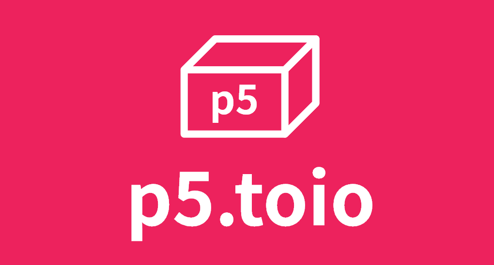

Control toio™Core Cube in p5.js instantly
![[object Object]](/p5.toio/images/easy.svg)
Easy to Use
p5.toio was designed from the ground up to be easily integrated and used to control toio™Core Cube in p5.js simply and quickly.
![[object Object]](/p5.toio/images/focus.svg)
Focus on What You Create
p5.toio lets you focus on your creativity, and we'll do the chores. A lot of usuful APIs and utilities are included in this treasure box.
![[object Object]](/p5.toio/images/powered.svg)
Powered by Web Bluetooth
Since p5.toio was implemented based on Web Bluetooth, you can start programming toio™Core Cube by simply accessing the URL from your browser and it runs on many devices, including Windows, Mac and Android.